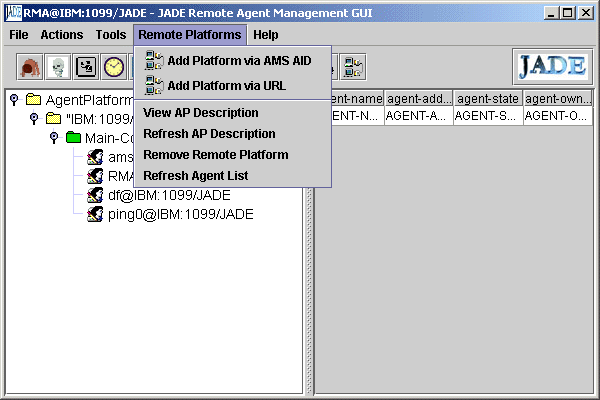
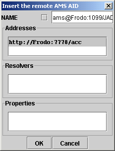
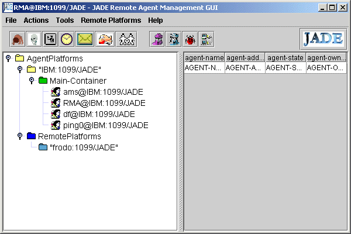
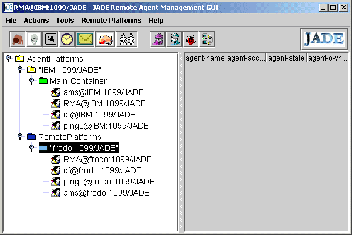

An alternative for inter platform communication using the HTTP protocol instead of IIOP (see Tutorial 3) has been provided with the JADE distribution. It is easy to use and provides a well known and universally used message transport protocol (MTP).
The HTTP MTP add-on comes with source and a jar file (htttp.jar) containing the compiled classes. The compiled code assumes you ar using the Crimson SAX parser (crimson.jar from Apache - a free download). If you want to use a different parser, e.g. Xerces, you need to follow the provided instructions. What you want to create is the file http.jar.
Once you have http.jar and crimson.jar the rest is easy. I just put these in the lib directory along with the other JADE jar files in the lib directory. Then I just needed to tell JADE where the main class is using the -mtp command line switch. All this can be put in a one line batch file which looks like this:
java -classpath .;.\lib\jade.jar;.\lib\jadeTools.jar;.\lib\iiop.jar;.\lib\base64.jar;.\lib\crimson.jar;.\lib\http.jar jade.Boot -mtp jamr.jademtp.http.MessageTransportProtocol %1 %2 %3 %4 %5 %6 %7 %8 %9
You could call this runjadehttp.bat.
The easiest way to run is to load both the HTTP MTP and the Ping Agent from the command line like so:
runjadehttp -gui ping0:examples.PingAgent.PingAgent
Now you will not see the huge IOR number for the end point of this platform but rather something more human:
http://IBM:7778/acc is the address of the platform on the host "IBM" on the default port 7778. You can override the defaults with -port and -host as usual.
Similarly run another platform on another host. In my case this is a computer called Frodo, so the platform has the address http://Frodo:7778/acc.
(Reminder: If you need the full name of the host, including the domain, specify it with -host, e.g. Frodo.scss.ryerson.ca, on the command line.)
Suppose we are on host IBM and want to send the "ping" message to a Ping Agent on host Frodo. But is there a Ping Agent there? And, if so, what is its name? We need some info from the remote platform. This is where the Remote Manager Agent (RMA) comes in.
On the RMA menu select "remote platforms". You see this.

Select "Add Platform via AMS AID". This window appears. (Shown filled out>)

Notice the name of the ams agent on the remote platform. The host part of the name is in RMI format. Note also that the checkbox is unselected. We need the Global Agent Identifier for the remote AMS.
On the other hand the address of the platform is HTTP since we added the HTTP MTP for inter platform communication.
After you click OK, and expand the platform you get this:

Nice, but where are the agents? To see them, select "frodo:1099/JADE" (actually, your equivalent to this), and right click the mouse. Then choose "refresh agent list", and there they are, like so:

Start up the Dummy Agent. Make sure the Communicative Act is QUERY-REF, and the Content is ping.
For the receiver name enter the global name of the Ping Agent on the remote platform, ping0@frodo:1099/JADE in the example. For the address (Right click on the Address field, remember?) enter the HTTP address: http://Frodo:7778/acc. Then send the message.
You should get an INFORM message back which you can inspect by clicking the "glasses" button. You should see "alive". (If you are running an older version of Ping Agent, you may see "(pong)". The change was made in order to conform to an Agent Cities test suite.)
If you do not use the -mtp command line switch, the Sun IIOP is added by default. You can add other MTPs (or remove them) once the RMA is running. Select the main container and right click, choosing, Add MTP.
To add the HTTP MTP, fill in the field for class name with jamr.jademtp.http.MessageTransportProtocol. Make sure http.jar and crimson.jar are on your class path before booting JADE.